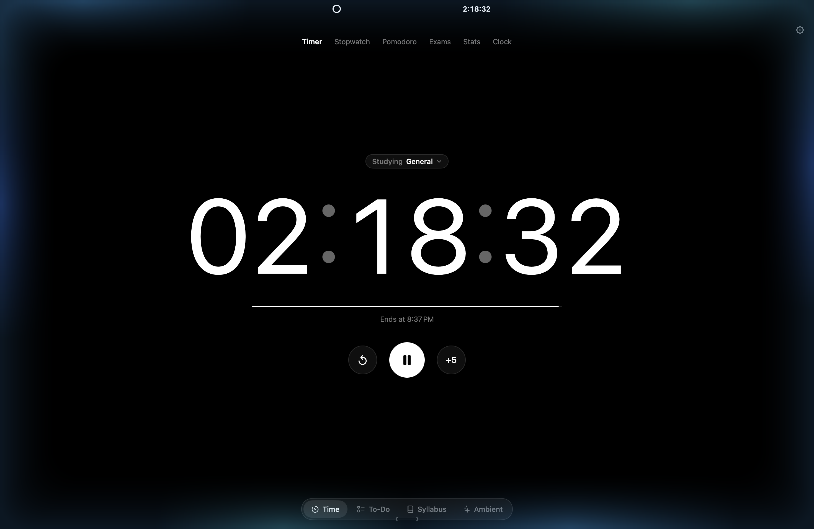
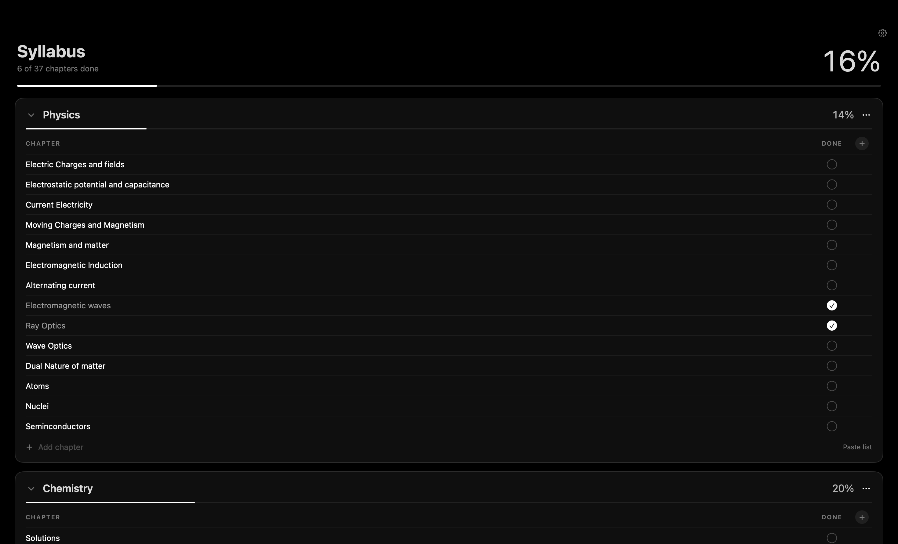
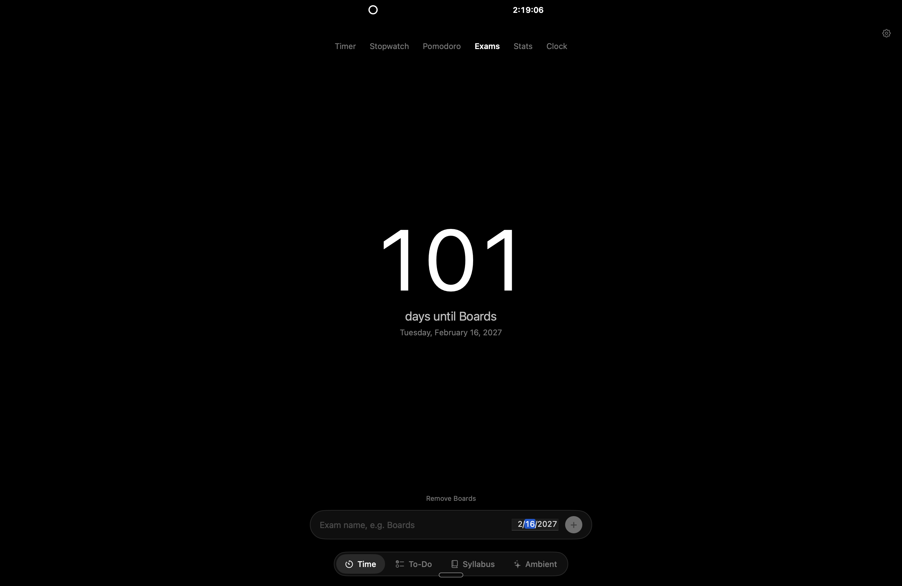
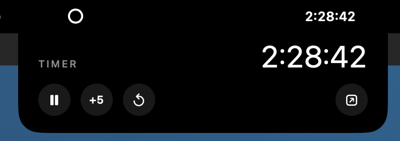

Free · Open source · For Mac
Study, calmly.
Your syllabus, focus timer, exam countdown and to-dos in one quiet, pitch-black app. No accounts, no ads, no internet.
Requires an Apple Silicon Mac (M1 or later) and macOS 15 or newer. Free, version 1.1.

Everything in one window
Built for the months before exams.
Solace started as a tool for my own board-exam prep. It does a few things, and does them quietly.
Know exactly where your syllabus stands.
Add your own subjects and chapters, tick them off, and add revision rounds as you go.
- Progress % per subject and overall
- Revision 1, 2, 3 columns, up to six
- Paste a whole chapter list at once

See the countdown, every day.
Add Boards, JEE or any exam with its date, and Solace shows the days left in big, honest type.
- Nearest exam front and centre
- Others listed underneath
- Past exams tidy themselves away

Your timer lives by the notch.
Start a timer, close the window, and keep going. The countdown sits beside the MacBook notch. Hover over it to pause, add five minutes or reset.

Timer, Pomodoro, stopwatch
Type any duration or pick a preset. Space starts and pauses.
Study stats
Time studied today, this week and all time, a 7-day chart and your streak.
To-do lists
Separate lists for school, work and everything else. Done items sink to the bottom.
Ambient glow
A soft light around your screen that takes the colour of your Apple Music album art and pulses to the beat.
Glow follows Pomodoro
Warm while you focus, green on breaks, and a flash when time's up.
Backup & restore
Moving to a new Mac? Export everything to one file and import it there.
Install
Up and running in a minute.
Solace is a free student project, so it isn't notarized by Apple. macOS asks you to approve it once.
Download and unzip
Get Solace.zip and double-click it.
Move to Applications
Drag Solace into your Applications folder, then open it.
If macOS blocks it, click Done
You'll see a "can't verify the developer" message. That's expected for apps outside the App Store.
Open Anyway
Go to System Settings → Privacy & Security, scroll down, and click Open Anyway. You only do this once.
Optional permissions: Apple Music (for album colours), System Audio Recording (so the glow can pulse to the beat; nothing is recorded), and Notifications (timer alerts).
Privacy
Your data never leaves your Mac.
Solace has no accounts, no analytics and no network code at all. Your lists, syllabus and study time are stored as small files on your Mac, and the code is open for anyone to read.